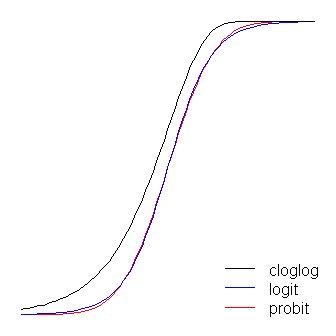

5 Hypothesis Testing
Some text here …
5.1 Connecting to Theory
Memo
In order to bound the probability of Type 2 errors below a small value we may have to accept a high probability of making a Type 1 error.
Scheel
Abstract
For almost half a century, Paul Meehl educated psychologists about how the mindless use of null-hypothesis significance tests made research on theories in the social sciences basically uninterpretable. In response to the replication crisis, reforms in psychology have focused on formalizing procedures for testing hypotheses. These reforms were necessary and influential. However, as an unexpected consequence, psychological scientists have begun to realize that they may not be ready to test hypotheses. Forcing researchers to prematurely test hypotheses before they have established a sound “derivation chain” between test and theory is counterproductive. Instead, various nonconfirmatory research activities should be used to obtain the inputs necessary to make hypothesis tests informative. Before testing hypotheses, researchers should spend more time forming concepts, developing valid measures, establishing the causal relationships between concepts and the functional form of those relationships, and identifying boundary conditions and auxiliary assumptions. Providing these inputs should be recognized and incentivized as a crucial goal in itself. In this article, we discuss how shifting the focus to nonconfirmatory research can tie together many loose ends of psychology’s reform movement and help us to develop strong, testable theories, as Paul Meehl urged.
Memo Scheel
Excessive leniency in study design, data collection, and analysis led psy- chological scientists to be overconfident about many hypotheses that turned out to be false. In response, psy- chological science as a field tightened the screws on the machinery of confirmatory testing: Predictions should be more specific, designs more powerful, and statistical tests more stringent, leaving less room for error and misrepre- sentation. Confirmatory testing will be taught as a highly formalized protocol with clear rules, and the student will learn to strictly separate it from the “exploratory” part of the research process. Has learned how to operate the hypothesis-testing machinery but not how to feed it with meaningful input.
When setting up a hypothesis test, the researcher has to specify how their independent and dependent variables will be operationalized, how many participants they will collect, which exclusion criteria they will apply, which statistical method they will use, how to decide whether the hypothesis was corroborated or falsified, and so on. But deciding between these myriad options often feels like guesswork.
A lack of knowledge about the elements that link their test back to the theory from which their hypothesis was derived. By using arbitrary defaults and heuristics to bridge these gaps, the researcher cannot be sure how their test result informs the theory.
5.2 GLMM
The advent of generalized linear models has allowed us to build regression-type models of data when the distribution of the response variable is non-normal–for example, when your DV is binary. (If you would like to know a little more about GLiMs, I wrote a fairly extensive answer here, which may be useful although the context differs.) However, a GLiM, e.g. a logistic regression model, assumes that your data are independent. For instance, imagine a study that looks at whether a child has developed asthma. Each child contributes one data point to the study–they either have asthma or they don’t. Sometimes data are not independent, though. Consider another study that looks at whether a child has a cold at various points during the school year. In this case, each child contributes many data points. At one time a child might have a cold, later they might not, and still later they might have another cold. These data are not independent because they came from the same child. In order to appropriately analyze these data, we need to somehow take this non-independence into account. There are two ways: One way is to use the generalized estimating equations (which you don’t mention, so we’ll skip). The other way is to use a generalized linear mixed model. GLiMMs can account for the non-independence by adding random effects (as (MichaelChernick?) notes). Thus, the answer is that your second option is for non-normal repeated measures (or otherwise non-independent) data. (I should mention, in keeping with (Macro?)’s comment, that general-ized linear mixed models include linear models as a special case and thus can be used with normally distributed data. However, in typical usage the term connotes non-normal data.)
Update: (The OP has asked about GEE as well, so I will write a little about how all three relate to each other.)
Here’s a basic overview:
- a typical GLiM (I’ll use logistic regression as the prototypical case) lets you model an independent binary response as a function of covariates
- a GLMM lets you model a non-independent (or clustered) binary response conditional on the attributes of each individual cluster as a function of covariates
- the GEE lets you model the population mean response of non-independent binary data as a function of covariates
Since you have multiple trials per participant, your data are not independent; as you correctly note, “[t]rials within one participant are likely to be more similar than as compared to the whole group.” Therefore, you should use either a GLMM or the GEE.
The issue, then, is how to choose whether GLMM or GEE would be more appropriate for your situation. The answer to this question depends on the subject of your research–specifically, the target of the inferences you hope to make. As I stated above, with a GLMM, the betas are telling you about the effect of a one unit change in your covariates on a particular participant, given their individual characteristics. On the other hand with the GEE, the betas are telling you about the effect of a one unit change in your covariates on the average of the responses of the entire population in question. This is a difficult distinction to grasp, especially because there is no such distinction with linear models (in which case the two are the same thing).
One way to try to wrap your head around this is to imagine averaging over your population on both sides of the equals sign in your model. For example, this might be a model:
\[logit(p_i)=β_0+β_1X_1+b_i\]
where:
\(logit(p)=ln(\frac{p}{1−p})\), & \(b∼N(0,σ_{b}^2)\)
There is a parameter that governs the response distribution (pp, the probability, with binary data) on the left side for each participant. On the right hand side, there are coefficients for the effect of the covariate[s] and the baseline level when the covariate[s] equals 0. The first thing to notice is that the actual intercept for any specific individual is not β0_0, but rather (β0+bi)(_0+b_i). But so what? If we are assuming that the bib_i’s (the random effect) are normally distributed with a mean of 0 (as we’ve done), certainly we can average over these without difficulty (it would just be β0_0). Moreover, in this case we don’t have a corresponding random effect for the slopes and thus their average is just β1_1. So the average of the intercepts plus the average of the slopes must be equal to the logit transformation of the average of the pip_i’s on the left, mustn’t it? Unfortunately, no. The problem is that in between those two is the logit, which is a non-linear transformation. (If the transformation were linear, they would be equivalent, which is why this problem doesn’t occur for linear models.) The following plot makes this clear:
Imagine that this plot represents the underlying data generating process for the probability that a small class of students will be able to pass a test on some subject with a given number of hours of instruction on that topic. Each of the grey curves represents the probability of passing the test with varying amounts of instruction for one of the students. The bold curve is the average over the whole class. In this case, the effect of an additional hour of teaching conditional on the student’s attributes is β1_1–the same for each student (that is, there is not a random slope). Note, though, that the students baseline ability differs amongst them–probably due to differences in things like IQ (that is, there is a random intercept). The average probability for the class as a whole, however, follows a different profile than the students. The strikingly counter-intuitive result is this: an additional hour of instruction can have a sizable effect on the probability of each student passing the test, but have relatively little effect on the probable total proportion of students who pass. This is because some students might already have had a large chance of passing while others might still have little chance.
The question of whether you should use a GLMM or the GEE is the question of which of these functions you want to estimate. If you wanted to know about the probability of a given student passing (if, say, you were the student, or the student’s parent), you want to use a GLMM. On the other hand, if you want to know about the effect on the population (if, for example, you were the teacher, or the principal), you would want to use the GEE.
What are the best methods for checking a generalized linear mixed model (GLMM) for proper fit? Unfortunately, it isn’t as straightforward as it is for a general linear model. n linear models the requirements are easy to outline: linear in the parameters, normally distributed and independent residuals, and homogeneity of variance (that is, similar variance at all values of all predictors).
For linear models, there are well-described and well-implemented methods for checking each of these, both visual/descriptive methods and statistical tests.
It is not nearly as easy for GLMMs.
Assumption: Random effects come from a normal distribution
Let’s start with one of the more familiar elements of GLMMs, which is related to the random effects. There is an assumption that random effects—both intercepts and slopes—are normally distributed.
These are relatively easy to export to a data set in most statistical software (including SAS and R). Personally, I much prefer visual methods of checking for normal distributions, and typically go right to making histograms or normal probability plots (Q-Q plots) of each of the random effects.
If the histograms look roughly bell-shaped and symmetric, or the Q-Q plots generally fall close to a diagonal line, I usually consider this to be good enough.
If the random effects are not reasonably normally distributed, however, there are not simple remedies. In a general linear model outcomes can be transformed. In GLMMs they cannot.
Research is currently being conducted on the consequences of mis-specifying the distribution of random effects in GLMMs. (Outliers, of course, can be handled the same way as in generalized linear models—except that an entire random subject, as opposed to a single observation, may be examined.)
Assumption: The chosen link function is appropriate
Additional assumptions of GLMMs are more related to the generalized linear model side. One of these is the relationship of the numeric predictors to the parameter of interest, which is determined by the link function.
For both generalized linear models and GLMMs, it is important to understand that the most typical link functions (e.g., the logit for binomial data, the log for Poisson data) are not guaranteed to be a good representation of the relationship of the predictors with the outcomes.
Checking this assumption can become quite complicated as models become more crowded with fixed and random effects.
One relatively simple (though not perfect) way to approach this is to compare the predicted values to the actual outcomes.
With most GLMMs, it is best to compare averages of outcomes to predicted values. For example, with binomial models, one could take all of the values with predicted values near 0.5, 0.15, 0.25, etc., and average the actual outcomes (the 0s and 1s). You can then plot these average values against the predicted values.
If the general form of the model is correct, the differences between the predicted values and the averaged actual values will be small. (Of course how small depends on the number of observations and variance function).
No “patterns” in these differences should be obvious.
This is similar to the idea of the Hosmer-Lemeshow test for logistic regression models. If you suspect that the form of the link function is not correct, there are remedies. Possibilites include changing the link function, transforming numeric predictors, or (if necessary) categorizing continuous predictors.
Assumption: Appropriate estimation of variance
Finally, it is important to check the variability of the outcomes. This is also not as easy as it is for linear models, since the variance is not constant and is a function of the parameter being estimated.
Fortunately, this is one of the easier assumptions to check. One of the fit statistics your statistical software produces is a generalized chi-square that compares the magnitude of the model residuals to the theoretical variance.
The chi-square divided by its degrees of freedom should be approximately 1. If this statistic is too large, then the variance is “overdispersed” (larger than it should be). Alternatively, if the statistic is too small, the variance is “underdispersed.”
While the best way to approach this varies by distribution, there are options to adjust models for overdispersion that result in more conservative p-values.
5.3 Logit
Possible Analysis methods:
Below is a list of some analysis methods you may have encountered. Some of the methods listed are quite reasonable while others have either fallen out of favor or have limitations.
- Logistic regression, the focus of this page
- Probit regression. Probit analysis will produce results similar logistic regression. The choice of probit versus logit depends largely on individual preferences.
- OLS regression. When used with a binary response variable, this model is known as a linear probability model and can be used as a way to describe conditional probabilities. However, the errors (i.e., residuals) from the linear probability model violate the homoskedasticity and normality of errors assumptions of OLS regression, resulting in invalid standard errors and hypothesis tests. For a more thorough discussion of these and other problems with the linear probability model.
- Two-group discriminant function analysis. A multivariate method for dichotomous outcome variables.
- Hotelling’s T2. The 0/1 outcome is turned into the grouping variable, and the former predictors are turned into outcome variables. This will produce an overall test of significance but will not give individual coefficients for each variable, and it is unclear the extent to which each “predictor” is adjusted for the impact of the other “predictors.”
5.3.1 Odd’s Ratio
If you want to interpret the estimated effects as relative odds ratios,
just do exp(coef(x)) (gives you \(e^β\),
the multiplicative change in the odds ratio for \(y=1\)
if the covariate associated with \(β\) increases by 1).
For profile likelihood intervals for this quantity, you can do
require(MASS)
exp(cbind(coef(x), confint(x))) To get the odds ratio, we need the classification cross-table of the original dichotomous DV and the predicted classification according to some probability threshold that needs to be chosen first.
5.4 Probit
A standard linear model (e.g., a simple regression model) can be thought of as having two ‘parts.’ These are called the structural component and the random component. For example:
\[Y=β_0+β_1 X+ε\]
where
\(ε∼N(0,σ^2)\)
The first two terms (that is, \(β_0 + β_1 X\)) constitute the structural component, and the \(ε\) (which indicates a normally distributed error term) is the random component.
When the response variable is not normally distributed (for example, if your response variable is binary) this approach may no longer be valid.
The generalized linear model (GLiM) was developed to address such cases, and logit and probit models are special cases of GLiMs that are appropriate for binary variables (or multi-category response variables with some adaptations to the process).
A GLiM has three parts, a structural component, a link function, and a response distribution.
For example:
\[g(μ)=β_0+β_1 X\]
Here \(β_0 + β_1 X\) is again the structural component, \(g()\) is the link function, and \(μ\) is a mean of a conditional response distribution at a given point in the covariate space.
The way we think about the structural component here doesn’t really differ from how we think about it with standard linear models; in fact, that’s one of the great advantages of GLiMs. Because for many distributions the variance is a function of the mean, having fit a conditional mean (and given that you stipulated a response distribution), you have automatically accounted for the analog of the random component in a linear model (N.B.: this can be more complicated in practice).
The link function is the key to GLiMs: since the distribution of the response variable is non-normal, it’s what lets us connect the structural component to the response– it ‘links’ them (hence the name). It’s also the key to your question, since the logit and probit are links, and understanding link functions will allow us to intelligently choose when to use which one. Although there can be many link functions that can be acceptable, often there is one that is special. Without wanting to get too far into the weeds (this can get very technical) the predicted mean, \(μ\), will not necessarily be mathematically the same as the response distribution’s canonical location parameter; the link function that does equate them is the canonical link function. The advantage of this "is that a minimal sufficient statistic for \(β\). The canonical link for binary response data (more specifically, the binomial distribution) is the logit. However, there are lots of functions that can map the structural component onto the interval (0,1)(0,1), and thus be acceptable; the probit is also popular, but there are yet other options that are sometimes used (such as the complementary log log, \(ln(−ln(1−μ))\), often called cloglog). Thus, there are lots of possible link functions and the choice of link function can be very important. The choice should be made based on some combination of:
- Knowledge of the response distribution,
- Theoretical considerations, and
- Empirical fit to the data.
These considerations can be used to guide your choice of link. To start with, if your response variable is the outcome of a Bernoulli trial (that is, 0 or 1), your response distribution will be binomial, and what you are actually modeling is the probability of an observation being a 1 (that is, \(π(Y=1)\). As a result, any function that maps the real number line, \((−∞,+∞)\) to the interval \((0,1)\) will work.
If you are thinking of your covariates as directly connected to the probability of success, then you would typically choose logistic regression because it is the canonical link. However, consider the following example: You are asked to model high_Blood_Pressure as a function of some covariates. Blood pressure itself is normally distributed in the population. Clinicians dichotomized it during the study (that is, they only recorded ‘high-BP’ or ‘normal’). In this case, probit would be preferable a-priori for theoretical reasons. Your binary outcome depends on a hidden Gaussian variable. Another consideration is that both logit and probit are symmetrical, if you believe that the probability of success rises slowly from zero, but then tapers off more quickly as it approaches one, the cloglog is called for.
Lastly, note that the empirical fit of the model to the data is unlikely to be of assistance in selecting a link, unless the shapes of the link functions in question differ substantially (of which, the logit and probit do not). For instance, consider the following simulation:
set.seed(1)
probLower = vector(length=1000)
for(i in 1:1000){
x = rnorm(1000)
y = rbinom(n=1000, size=1, prob=pnorm(x))
logitModel = glm(y~x, family=binomial(link="logit"))
probitModel = glm(y~x, family=binomial(link="probit"))
probLower[i] = deviance(probitModel)<deviance(logitModel)
}
sum(probLower)/1000
[1] 0.695Even when we know the data were generated by a probit model, and we have 1000 data points, the probit model only yields a better fit 70% of the time, and even then, often by only a trivial amount. Consider the last iteration:
deviance(probitModel)
[1] 1025.759
deviance(logitModel)
[1] 1026.366
deviance(logitModel)-deviance(probitModel)
[1] 0.6076806The reason for this is simply that the logit and probit link functions yield very similar outputs when given the same inputs.

The logit and probit functions are practically identical, except that the logit is slightly further from the bounds when they ‘turn the corner.’ (Note that to get the logit and the probit to align optimally, the logit’s \(β_1\) must be \(≈1.7\) times the corresponding slope value for the probit. In addition, I could have shifted the cloglog over slightly so that they would lay on top of each other more, but I left it to the side to keep the figure more readable. Notice that the cloglog is asymmetrical whereas the others are not; it starts pulling away from 0 earlier, but more slowly, and approaches close to 1 and then turns sharply.
A couple more things can be said about link functions. First, considering the identity function \((g(η)=ηg(\eta)=\eta)\) as a link function allows us to understand the standard linear model as a special case of the generalized linear model (that is, the response distribution is normal, and the link is the identity function). It’s also important to recognize that whatever transformation the link instantiates is properly applied to the parameter governing the response distribution (that is, \(μ\)), not the actual response data. Finally, because in practice we never have the underlying parameter to transform, in discussions of these models, often what is considered to be the actual link is left implicit and the model is represented by the inverse of the link function applied to the structural component instead. That is:
\[μ=g^{−1}(β_0+β_1 X)\]
For instance, logistic regression is usually represented:
\[π(Y)=\frac{exp(β_0 + β_1 X)}{1+exp(β_0 + β_1 X)}\]
instead of:
\[ln(\frac{(π(Y)}{1−π(Y)}) = β_0 + β_1 X\]
For a quick and clear, but solid, overview of the generalized linear model, see chapter 10 of Fitzmaurice, Laird, & Ware (2004), For how to fit these models in R, check out the documentation for the function ?glm in the base package.
(One final note added later:) I occasionally hear people say that you shouldn’t use the probit, because it can’t be interpreted. This is not true, although the interpretation of the betas is less intuitive. With logistic regression, a one unit change in \(X_1\) is associated with a \(β_1\) change in the log odds of ‘success’ (alternatively, an \(exp(β_1)\)-fold change in the odds), all else being equal. With a probit, this would be a change of \(β_1 z\)’s. (Think of two observations in a dataset with \(z\)-scores of 1 and 2, for example.) To convert these into predicted probabilities, you can pass them through the normal CDF, or look them up on a \(z\)-table.